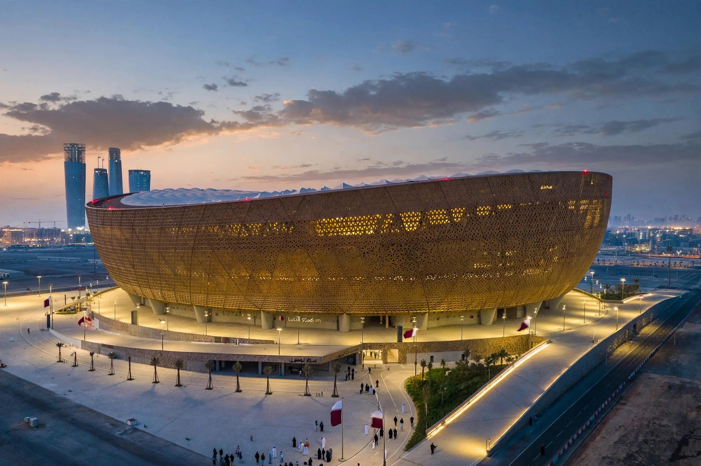

| Lusail Stadium | |
|---|---|
| Location | Lusail, Qatar |
| Capacity | 88,966 (2022 World Cup) |
| Construction | 2017–2021 |
| Architect | Foster + Partners |
Lusail Stadium (Arabic: استاد لوسيل) is a football stadium in Lusail, Qatar. It is the largest stadium in Qatar and the Middle East by capacity and was built for the 2022 FIFA World Cup, hosting the final between Argentina and France on 18 December 2022.

Designed by the British firm Foster + Partners, the stadium's gleaming gold, bowl-shaped facade is inspired by the fanar lanterns and handcrafted bowls of traditional Arab craftsmanship, with intricate perforated patterns casting dappled light. The stadium was constructed by a joint venture of Qatari and Chinese contractors, beginning in 2017.
Lusail hosted ten matches during the tournament, including the final, in which Argentina defeated France on penalties after a 3–3 draw — a match widely described as one of the greatest World Cup finals ever played. With attendances around 89,000, it was the largest venue of the tournament.
After the tournament, plans were announced to reduce the stadium's capacity, remove the upper tier of seating for conversion to other uses, and repurpose much of the interior as community facilities, in keeping with Qatar's legacy programme for its World Cup venues.